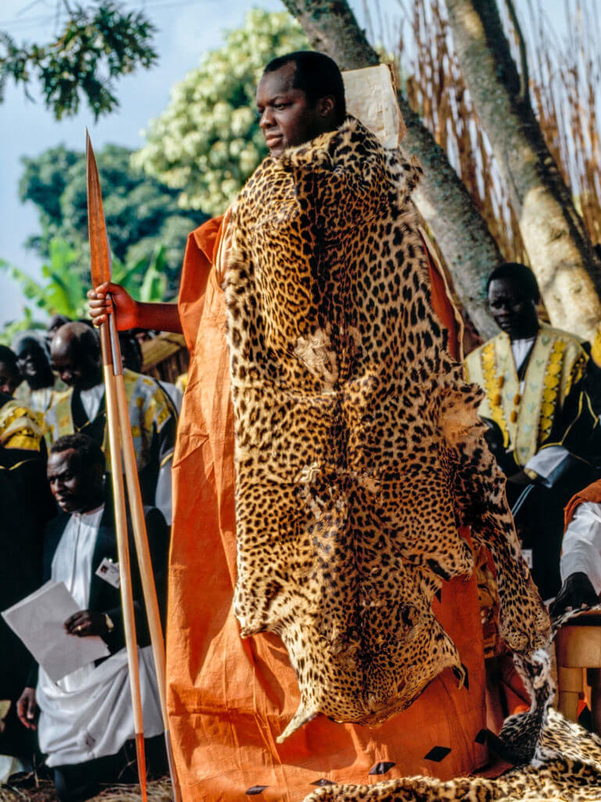

THE BAGANDANS
The Buganda culture, originating from the Buganda Kingdom in present-day Uganda,
is one of the most influential cultures in.
It is characterized by a rich history, intricate social structures, and a vibrant artistic heritage.
This culture has been shaped over centuries by its interactions with neighboring tribes, colonial influences, and internal developments
ACTIVITIES
Religion
The Buganda Kingdom, located in present-day Uganda, has a rich cultural heritage that includes a unique form of worship known as "Kabaka's Worship." This tradition is deeply rooted in the Buganda culture and is centered around the worship of the Kabaka (King) and ancestral spirits. The Buganda people believe in a pantheon of gods and spirits, including the supreme god, Mulungu, and the ancestral spirits of their ancestors, known as "Abalabi."
Kabaka's Worship
Kabaka's Worship is a significant aspect of Buganda's religious practices. It involves rituals and ceremonies performed in honor of the Kabaka and the ancestral spirits. These ceremonies are believed to ensure the prosperity, protection, and well-being of the kingdom and its people. The rituals often include offerings, sacrifices, and prayers directed towards the Kabaka and the ancestral spirits.
Ancestral Spirits (Abalabi)
The Buganda people hold a strong belief in the power and influence of their ancestors. They believe that the spirits of their ancestors watch over them and play a crucial role in their daily lives. The worship of these ancestral spirits, known as "Abalabi," is a central part of Buganda's religious practices. Offerings and sacrifices are made to appease these spirits and seek their blessings.
Rituals and Ceremonies
Rituals and ceremonies in Buganda's traditional worship are elaborate and involve various stages. These include the preparation of sacred spaces, the performance of specific rituals, and the offering of sacrifices. The ceremonies are often accompanied by music, dance, and other forms of artistic expression that are integral to the Buganda culture.Role of the Kabaka
The Kabaka plays a pivotal role in these rituals and ceremonies. As the spiritual leader of the Buganda people, the Kabaka is seen as the intermediary between the living and the spirits. His participation in these rituals is essential for the proper execution of the ceremonies and the fulfillment of the spiritual obligations towards the ancestral spirits and the supreme god.DANCES
Nankasa
Description: Nankasa is a traditional dance performed by women. It involves rhythmic movements of the hips and hands, accompanied by clapping and singing. The dance is often performed during social gatherings and festivals, celebrating life's joys and milestones.
Significance: Nankasa is a symbol of female strength and unity within the Buganda community. It reflects the importance of women in Buganda society and their contributions to family and community life.

Baakisiimba
Description: Baakisiimba is a dance performed by both men and women. It involves intricate footwork and hand movements, set to the rhythm of drums and other percussion instruments. The dance is characterized by its high energy and dynamic movements.
Significance: Baakisiimba represents the vitality and dynamism of the Buganda people. It is often performed during festivals and ceremonies, showcasing the tribe's ability to celebrate life with enthusiasm and vigor.

Muwogola
Descriptionn: Muwogola is a dance traditionally performed by young men during initiation ceremonies. The dance involves mimicking the movements of animals, such as leopards and antelopes, and is accompanied by drums and songs that tell stories of bravery and manhood.Significancen: Muwogola is a rite of passage for young men, marking their transition into adulthood and their roles within the community. It emphasizes the importance of courage, leadership, and the connection between humans and nature.

Gomesa
Descriptionn: The Gomesa dance is performed by young men who have completed their initiation into manhood. The dance involves wearing a traditional headdress called a gomesa, which is adorned with feathers and other symbols. The dance is characterized by its elegance and grace, reflecting the maturity and wisdom gained through initiation.
Significancen: The Gomesa dance signifies the completion of the initiation process and the young men's readiness to take on adult responsibilities within the community. It celebrates the transition from boyhood to manhood and the young men's contribution to the preservation of Buganda culture.

Kigongo
Description: Kigongo is a dance performed by men, often during festivals and ceremonies. It involves rhythmic movements of the body, accompanied by clapping and singing. The dance is known for its powerful and energetic performances.
Significancen: Kigongo represents the strength and masculinity of the Buganda people. It is a way for men to express their identity and contribute to the communal celebration of important events.
Cultural Food
Buganda cultural food, reflective of the broader Ugandan culinary tradition, is rich in variety and flavor, showcasing the country's fertile lands and diverse cultural influences. Here's an overview of some key aspects of Buganda's cultural food:
National Dish: Matoke
Matoke is the national dish of Uganda and a staple in Buganda cuisine. It involves cooking green bananas (known as matooke) in a variety of ways, often mashed and served with a side of sauce made from vegetables, beans, and spices. This dish is a testament to the Buganda people's reliance on agriculture, particularly bananas, which are central to their diet and economy 1.Katogo
Katogo is a traditional Ugandan breakfast dish that originated in Buganda and Western Uganda. Initially considered a poor man's food, it has evolved into a beloved breakfast option across the country. Katogo typically consists of diced cassava combined with beans, though modern versions may include a variety of sauces and ingredients such as potatoes, pork, offal, cassava, and green vegetables. The name "Katogo" means "mixture," highlighting the dish's versatility and adaptability 15.Luwombo
Luwombo, believed to have been created by the personal chef of King Kabaka Mwanga of the Buganda Kingdom in the late 19th century, is a classic Ugandan dish. It involves steaming chicken, beef, or fish with vegetables such as carrots, potatoes, and mushrooms, along with a peanut (groundnut) sauce, all wrapped in banana leaves. This dish is a favorite among both royalty and common folk, symbolizing the fusion of traditional and modern flavors in Ugandan cuisine 45.Other Notable Dishes
Matooke: Beyond its status as the national dish, matooke is a versatile ingredient used in various dishes, including Katogo, reflecting its importance in Buganda and Ugandan cuisine. Katogo Variants: Besides the traditional Katogo, there are several variants of the dish, incorporating different ingredients and sauces, showcasing the creativity and adaptability of Buganda cuisine. Groundnut Sauce (Binyebwa): A popular sauce made from groundnuts, often served with posho (maize flour porridge) or as a side dish, highlighting the use of local ingredients in Buganda cooking 5.Cultural Aspects
Mealtime Traditions: In Buganda, meals are often shared communally, with everyone washing their hands before and after eating. It's customary to serve food on floor mats, and eating with hands is common. Before eating, a short prayer is usually said, emphasizing the cultural significance of food and community in Buganda 1. Respect and Hospitality: It's considered impolite to grab for salt or a spoon without asking someone nearby to pass it. Leaving the room while others are eating is also seen as disrespectful, highlighting the importance of communal dining and respect in Buganda culture 1.Major Cultural Events
Major cultural events in Buganda, as a tribe, are deeply rooted in their history, traditions, and social structures. While the sources provided do not exclusively focus on Buganda-specific events, they offer insights into Uganda's cultural landscape, which includes significant contributions from the Buganda tribe. Here's an overview of some cultural events and practices that are emblematic of Buganda's rich heritage:
Imbalu Festival
Imbalu is a traditional Buganda ceremony that marks the initiation of young men into manhood. It involves a series of rituals, including circumcision, and is followed by a period of seclusion. After the initiation, the young men undergo a series of dances and songs, which are performed to entertain guests and celebrate their transition into manhood. This festival is a significant cultural event in Buganda, reflecting the tribe's traditions and values regarding masculinity and community 3.Ekyooto Festival
Ekyooto is another important festival in Buganda, marking the beginning of the harvest season. It is a time for the community to come together to celebrate the hard work and success of the agricultural year. The festival includes traditional dances, music, and feasting, showcasing the Buganda people's connection to the land and their agricultural heritage 3.Gombe Dance
Gombe is a traditional dance performed by the Baganda people, one of the largest tribes in Uganda. The Gombe dance is performed at various celebrations, including weddings and baptisms, and is known for its expressive movements and storytelling aspect. It is a testament to the Buganda's rich dance traditions and the importance of music and dance in their cultural expressions 3.Kabaka's Coronation
While not a recurring event, the coronation of the Kabaka holds significant cultural importance for the Buganda tribe. The Kabaka, or king, plays a central role in Buganda's social, political, and cultural institutions. His coronation is a grand ceremony that involves traditional rituals, dances, and feasts, symbolizing the continuity of the Buganda monarchy and the tribe's cultural heritage 5.Basketry and Artisan Crafts
Beyond festivals and ceremonies, the Buganda people are renowned for their craftsmanship, particularly in basketry. Women are known for creating colorful and intricately designed mats, which serve both practical and decorative purposes. This art form is a testament to the Buganda's skill and creativity, reflecting their cultural heritage and traditions 5.ArtWork
Buganda artwork, reflecting the rich cultural heritage of the Buganda tribe in Uganda, encompasses a variety of traditional crafts and artistic expressions. These artworks are deeply rooted in the tribe's history, traditions, and daily life, showcasing the Buganda people's creativity, craftsmanship, and connection to their environment.
Basketry
Basketry is one of the most highly developed crafts in Uganda, with the Buganda tribe being a significant contributor. Basketry serves both practical and decorative purposes, with baskets used for housing, stockades, fences, pens, traps, and as containers for various items. The Buganda people have redesigned basketry to produce modern items like handbags, table mats, flat trays, ornament baskets, and mats with different patterns, showcasing their adaptability and creativity 2.Barkcloth-Making
Barkcloth-making is another traditional craft prevalent in Buganda, involving the use of the natalansis tree (omutuba). The process involves hitting the bark with a specially made heavy, grooved mallet (ensaamu), making the fibrous bark thinner and larger. Originally used as burial shrouds, bedding, and clothing, barkcloth has evolved to include modern items like table mats, shoulder bags, handbags, briefcases, and purses. This craft highlights the Buganda's resourcefulness and their ability to transform natural materials into functional and aesthetically pleasing items 2.Wood-Carving
Wood-carving is a traditional craft that has thrived in Uganda, including among the Buganda tribe. This craft involves creating decorative items and functional tools from wood. The designs have been influenced by external forces, but the core traditional elements remain, reflecting the Buganda's skill and creativity. Common woodcraft products include stools, beds, mortars and pestles, bowls, ladles, trays, and wooden canoes. Some carvings are done as decorations, taking the form of masks, omweso boards, and walking sticks 2.Pottery
Pottery is a specialized craft in Buganda, with royal potters working for the Kabaka having a special title and privileges. The pottery-making process involves building pots from the base upwards to the rim, using the coiling method. This craft is significant in Buganda culture, with the potters being men, and there are strong taboos against women approaching the clay pits. The pottery items produced are varied, reflecting the Buganda's practical needs and aesthetic preferences 2.Metalworking
Metalworking, including the making of metallic tools and utilities by blacksmiths, was a common practice in Buganda. Blacksmiths crafted cutting tools, the majority of which were spears and arrows, showcasing the tribe's skills in metalworking and their reliance on these tools for various purposes 2.Tools
Traditional Buganda tools, reflecting the tribe's deep connection to their land and their innovative approach to craftsmanship, encompass a variety of implements used for agriculture, construction, and daily life. These tools are not only functional but also carry cultural significance, embodying the Buganda people's ingenuity and adaptability.
Agricultural Tools
Hoes and Machetes: These are fundamental tools used for farming, including preparing the land, planting, and harvesting crops. The design and craftsmanship of these tools reflect the Buganda's understanding of their environment and the specific requirements of their agricultural practices. Baskets and : The Buganda people are renowned for their basketry skills, creating baskets and traps from locally available materials. These tools are used for storing crops, carrying goods, and capturing wildlife. The intricate designs and durability of these baskets and traps highlight the Buganda's craftsmanship and resourcefulness.Construction Tools
Sticks and Stones: In traditional Buganda, construction often involved the use of simple yet effective tools like sticks and stones. These were used for building homes, fences, and other structures, demonstrating the Buganda's practical approach to construction and their ability to work with what was readily available. Wooden Canoes: The Buganda people also crafted wooden canoes for fishing and transportation on water bodies. These canoes were built with a keen understanding of the local waters and the materials available, showcasing the Buganda's skills in woodworking and boatbuilding.Household Tools
Pottery: Pottery was a specialized craft in Buganda, with royal potters working for the Kabaka having a special title and privileges. The pottery-making process involved building pots from the base upwards to the rim, using the coiling method. This craft is significant in Buganda culture, with the potters being men, and there are strong taboos against women approaching the clay pits 4.Hunting and Warfare Tools
Spears and Arrows: The Buganda people crafted spears and arrows for hunting and warfare. These tools were made from durable materials and were designed for effectiveness in combat and hunting. The craftsmanship of these weapons reflects the Buganda's skills in metalworking and their reliance on these tools for survival and defenseMonuments
Buganda, located in present-day Uganda, has a rich history and culture that is deeply intertwined with its architectural heritage. Traditional Bugandan monuments, often referred to as "muzigo" or "mukasa," are significant structures that reflect the region's historical, social, and religious aspects. These monuments are not just buildings but are imbued with cultural significance and serve various purposes within the Bugandan society. Muzigo (Tombs) Muzigo refers to tombs, which are among the most common traditional Bugandan monuments. They are burial sites for the deceased, especially kings and queens, and are considered sacred places. The design of these tombs reflects the status of the person buried within. For instance, the tombs of kings are larger and more elaborate than those of ordinary people. The construction of these tombs involves intricate carvings and decorations, symbolizing the wealth and power of the deceased. Mukasa (Temples) Mukasa, on the other hand, refers to temples dedicated to the worship of ancestral spirits and deities. These temples are often found near the tombs of important figures, such as kings and queens. The architecture of these temples is designed to facilitate communication between the living and the spirits. They feature large open spaces for communal gatherings and rituals, as well as smaller, more private areas for individual prayer and meditation.
Architectural Features
Both muzigo and mukasa share several architectural features that are characteristic of Bugandan traditional architecture:Mud and Sticks Construction : Traditional Bugandan monuments are primarily constructed using mud and sticks, materials that were readily available and sustainable. This method of construction allowed for the creation of large, durable structures that could withstand the harsh climate conditions of the region.
Hatched Roofs : The roofs of these monuments are typically hatched with grass or leaves, providing shade and protection from the elements. This design also allows for ventilation, which is crucial in the tropical climate of Buganda.
Carved Doors and Windows : The doors and windows of these monuments are often carved with intricate designs, reflecting the artistic skills of the Bugandan people. These carvings serve both aesthetic and functional purposes, adding to the overall beauty and significance of the monuments.
Cultural Significance
Beyond their architectural beauty, these traditional Bugandan monuments hold deep cultural significance. They serve as reminders of the region's history, preserving the memory of past rulers and their contributions to Buganda. Additionally, these monuments play a vital role in the Bugandan belief system, serving as places of worship and reverence for ancestors and deities. In conclusion, traditional Bugandan monuments like muzigo and mukasa are not just physical structures but are integral parts of Buganda's cultural heritage. They embody the region's history, beliefs, and values, making them invaluable assets for understanding the Bugandan society and its evolution over time.Physical Assets
Traditional Bugandan physical assets encompass a wide range of properties and resources that have historical, cultural, and economic significance. These assets are deeply rooted in the Buganda Kingdom's heritage and contribute to its identity and prosperity. Here's an overview of the key physical assets mentioned in the sources:
Land and Natural Resources
Kabaka's Official Land: The traditional ruler of Buganda, known as the Kabaka, owns 350 square miles of land, which is a significant portion of the kingdom's territory. This land is used for various purposes, including agriculture, housing, and royal activities.Namasole's Land: Namasole, the queen mother, possesses ten square miles of land, reflecting her status and influence within the kingdom.
Banalinya's Land: Another notable landowner within the Buganda Kingdom is Banalinya, whose land holdings are also part of the kingdom's assets.
Kabaka's Lake: The Kabaka also owns a lake, which is likely used for fishing, recreation, and possibly ceremonial purposes.
Buildings and Structures
The Bulaange: This is one of the traditional ruler's residences, showcasing the architectural and cultural significance of the Buganda Kingdom.The Lubiri at Mengo: The Lubiri serves as the palace of the Kabaka, symbolizing the political and spiritual center of the kingdom.
The Butikkiro: This building is another royal residence, highlighting the importance of architecture in expressing the kingdom's hierarchy and traditions.
The Buganda Court Building: This structure is associated with the judicial and administrative functions of the kingdom, reflecting the Buganda Kingdom's governance system.
Former Omulamuzi and Omuwanika's Official Residences of Mengo: These residences belonged to the former Prime Minister and Speaker of Parliament, indicating the importance of these positions within the kingdom's governance.
Land Adjacent to Lubiri: This land was used for the construction of three Buganda Ministerial houses, illustrating the spatial organization and significance of government institutions in the kingdom.
Tombs and Burial Sites
All Bassekabaka's Tombs: The tombs of the Kabaka's predecessors, known as Bassekabaka, are considered sacred sites within the kingdom. These tombs are not only burial sites but also places of reverence and historical significance.Other Assets
Buganda Works Building at Kakeeka: This building likely served a variety of functions, including administration, workshops, or storage facilities, contributing to the kingdom's infrastructure and economic activities.Basiima House: Another royal residence, Basiima House is part of the traditional ruler's assets, reflecting the diversity of residential structures within the kingdom.
Nalinya's House at Lubaga: This residence belongs to Nalinya, another significant figure within the Buganda Kingdom, showcasing the kingdom's complex social and political structure.
Legends
Traditional Bugandan legends are rich tapestries of stories that have been passed down through generations, weaving together the history, culture, and moral lessons of the Buganda kingdom. These legends often revolve around the exploits of legendary kings, the origins of the Buganda people, and the natural world's mystical creatures. They serve not only as entertainment but also as a means of teaching important values and lessons to younger generations.